OmniRoute + Claude: Setting Up AI Model Routing
Configure OmniRoute to unify access to multiple AI models including Claude, with intelligent load balancing and fallback strategies through a local interface.
OmniRoute is a powerful tool for managing multiple AI model providers through a unified interface. In this guide, we'll set up OmniRoute to route requests to Claude and other LLMs with intelligent load balancing using a RoundRobin strategy. This approach allows you to leverage multiple free and paid AI providers while maintaining a single integration point.
Step 1 – Install Node.js
OmniRoute requires Node.js to run. Download and install the latest LTS version from the official Node.js website.
Step 2 – Install OmniRoute
Once Node.js is installed, proceed to the OmniRoute official website to download and install OmniRoute.
Step 3 – Install Visual Studio Code
We'll use Visual Studio Code as our terminal environment for launching and managing OmniRoute. Download the latest version from the official site.
Step 4 – Launch OmniRoute from VS Code Terminal
Open Visual Studio Code and launch a terminal. From the terminal, execute the OmniRoute launcher:
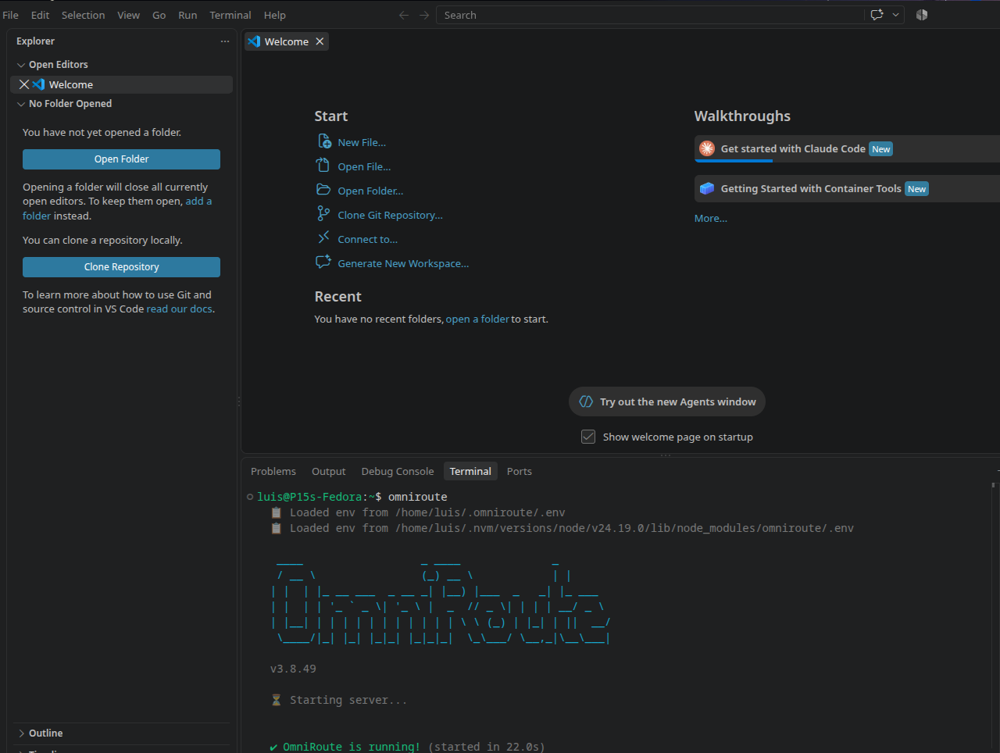
Step 5 – Access OmniRoute Dashboard
Once OmniRoute is running, open your browser and navigate to the local address displayed in the terminal output. The initial setup page will display the temporary password needed to access the dashboard.
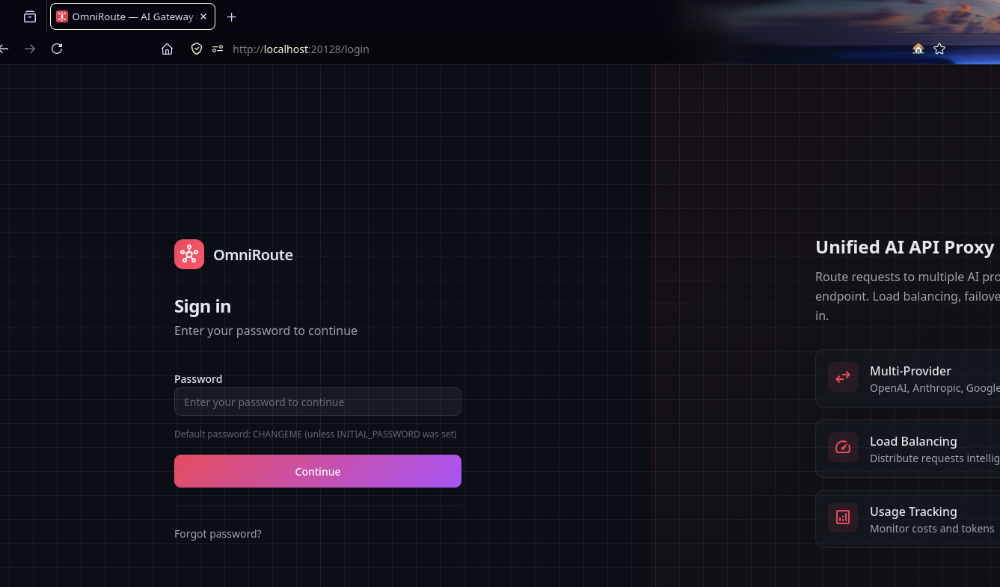
Enter the displayed password and click Continue to proceed to the dashboard:
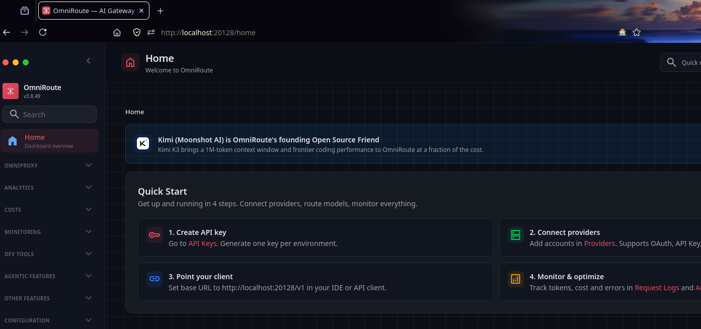
Step 6 – Add AI Providers
In the OmniRoute dashboard, you can add multiple AI model providers. For this guide, we'll add Antigravity and Kiro AI (which provides Claude models):
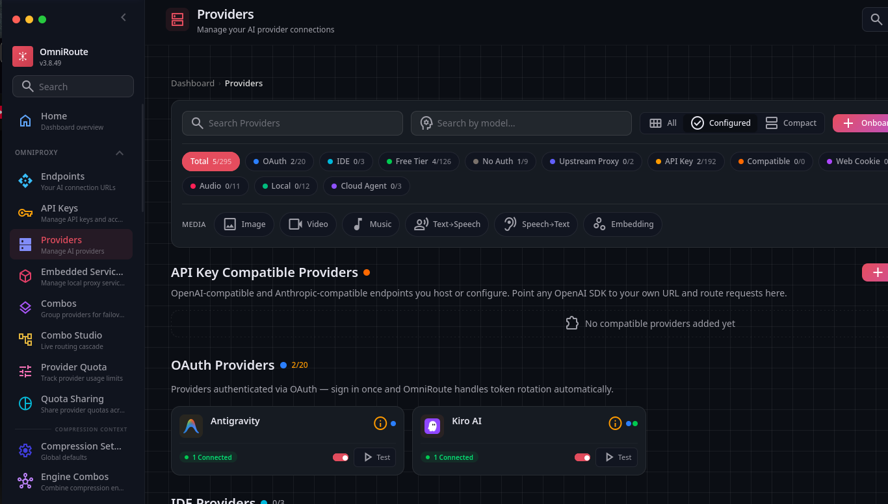
After adding providers, you can test them to verify they're working correctly:
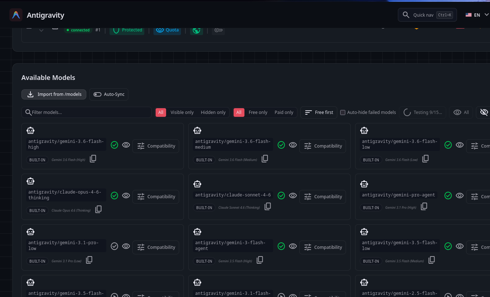
Connecting to Claude via Kiro AI: Select Google as your authentication method to connect Kiro AI, which provides access to Claude models:
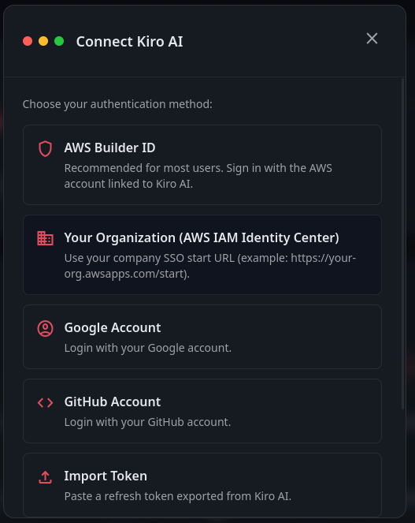
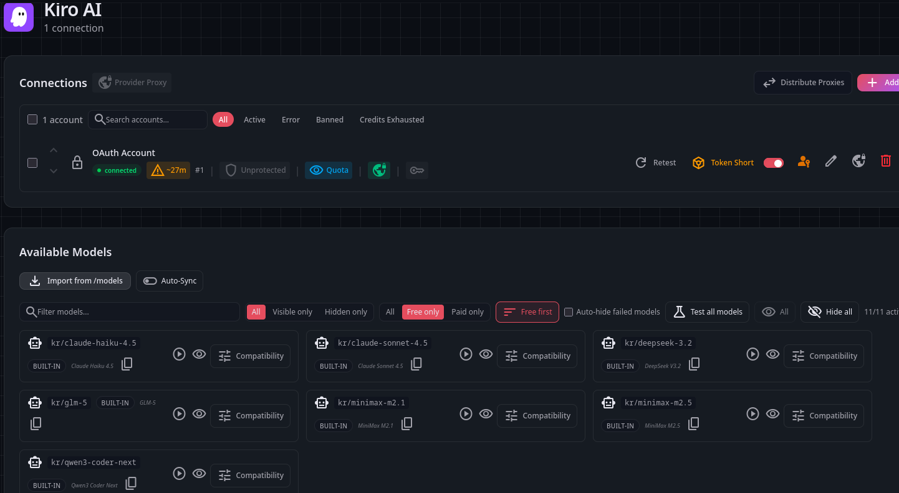
Step 7 – Add Additional Free Providers
To maximize your available models, consider adding these free or low-cost providers:
- NVIDIA NIM: Free API with excellent models (create a free developer account at build.nvidia.com)
- OpenRouter: Unified interface for multiple models (manage keys at openrouter.ai)
- OpenCode Free: Free tier access to various models
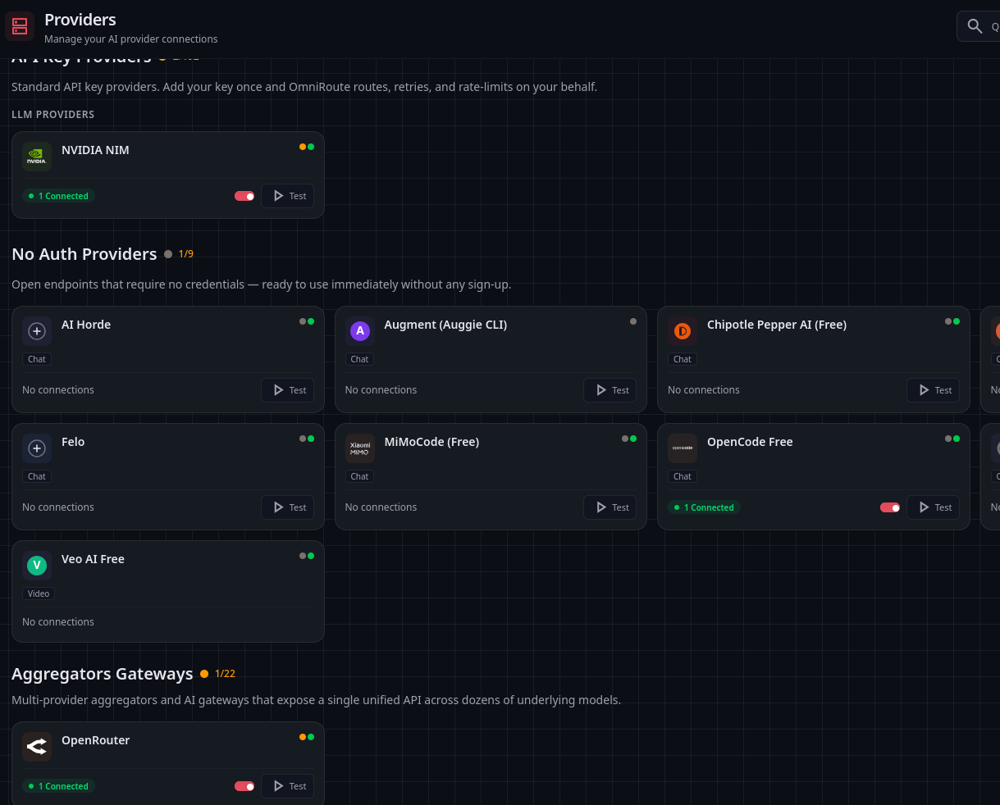
Step 8 – Create a Combo Flow
A "Combo Flow" in OmniRoute allows you to combine multiple providers and models under a single routing strategy. Click to create a new combo:
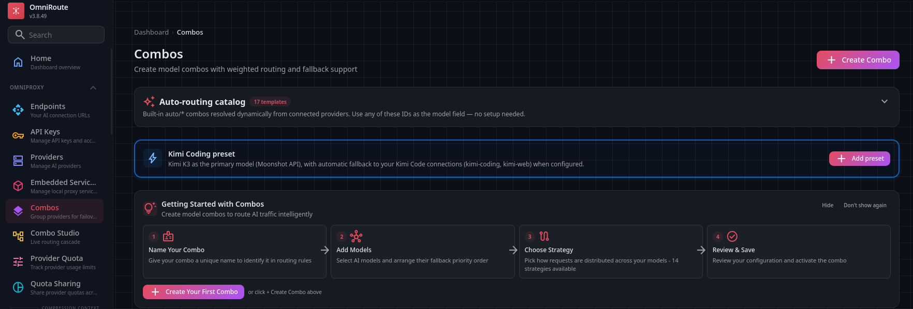
Select the default free template and proceed to model selection:
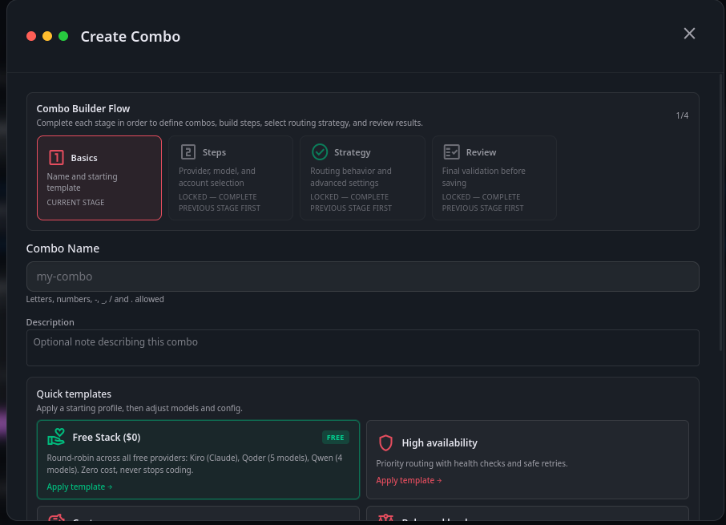
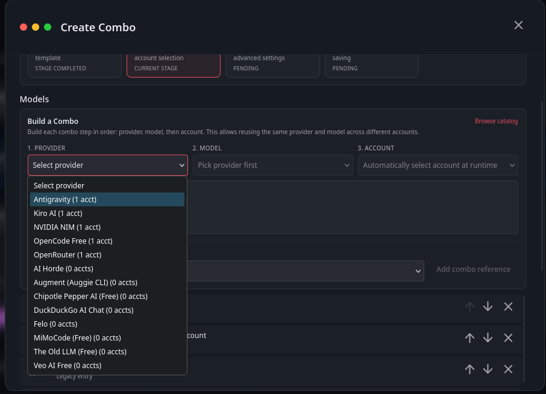
Arrange Model Priority: The order of models in the combo determines their execution sequence. Use the arrow controls to reorder them:
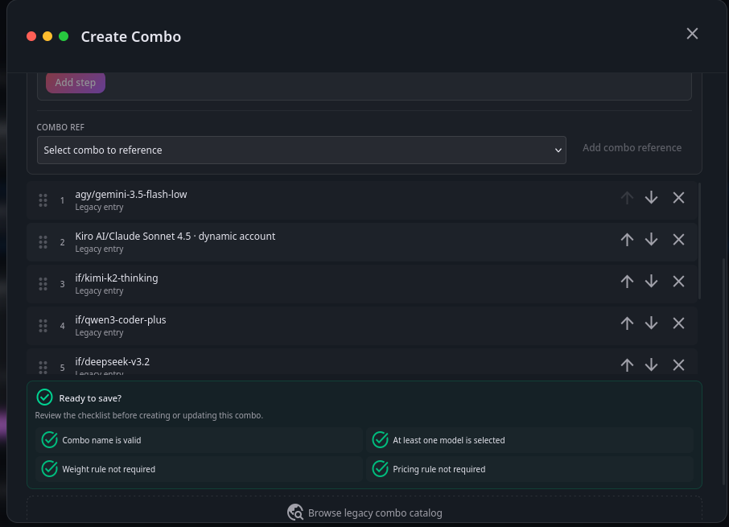
Configure Routing Strategy: Proceed to the Strategy step and select RoundRobin. This strategy cycles through your models sequentially, distributing load evenly and providing automatic fallback if one provider fails:
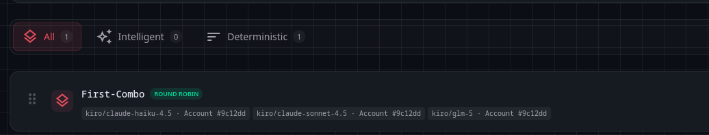
Complete the combo creation wizard and your multi-model routing configuration is ready.
Step 9 – Generate API Key
OmniRoute generates an API key that you'll use to authenticate requests. Create and copy this key for use with Claude Code:
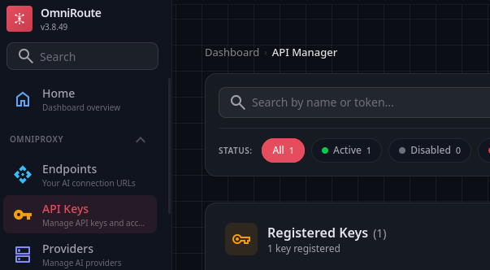
Step 10 – Configure Claude Code with OmniRoute
Before running Claude for the first time, configure environment variables to point to your OmniRoute instance. First, install Claude from the official quickstart guide:
Claude Code Quickstart Documentation
After installation, set the following environment variables in your terminal:
For Windows (PowerShell):
$env:CLAUDE_CONFIG_DIR = "$HOME\.claude-omniroute"
$env:ANTHROPIC_BASE_URL = "http://localhost:20128"
$env:ANTHROPIC_AUTH_TOKEN = "API_Key_You_Created"
$env:ANTHROPIC_API_KEY = ""
$env:ANTHROPIC_MODEL = "Combo_Name"For Linux/macOS (Bash):
export CLAUDE_CONFIG_DIR="$HOME/.claude-omniroute"
export ANTHROPIC_BASE_URL="http://localhost:20128"
export ANTHROPIC_AUTH_TOKEN="API_Key_You_Created"
export ANTHROPIC_API_KEY=""
export ANTHROPIC_MODEL="Combo_Name"- Replace
API_Key_You_Createdwith the key generated in Step 9 - Replace
Combo_Namewith the name of the combo you created in Step 8 - Leave
ANTHROPIC_API_KEYempty (empty string) - If all variables are set correctly, the terminal will return no output
You can now launch Claude Code. It will display the combo model you configured as the active model:
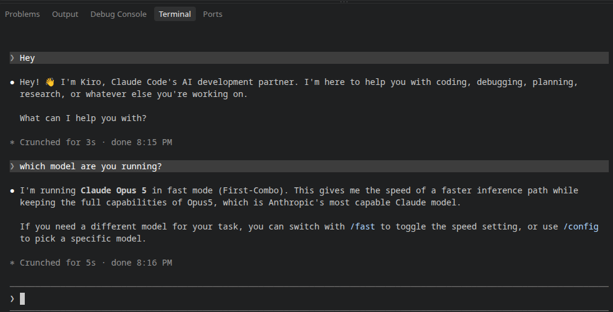
Key Benefits of This Setup
- Unified Interface: Access multiple AI models through a single endpoint
- Load Balancing: RoundRobin strategy distributes requests across models
- Automatic Fallback: If one provider fails, requests route to the next model
- Cost Optimization: Mix free and paid providers for cost-effective scaling
- Flexibility: Easily add, remove, or reorder providers and models
OmniRoute GitHub Repository – Complete source code and detailed documentation